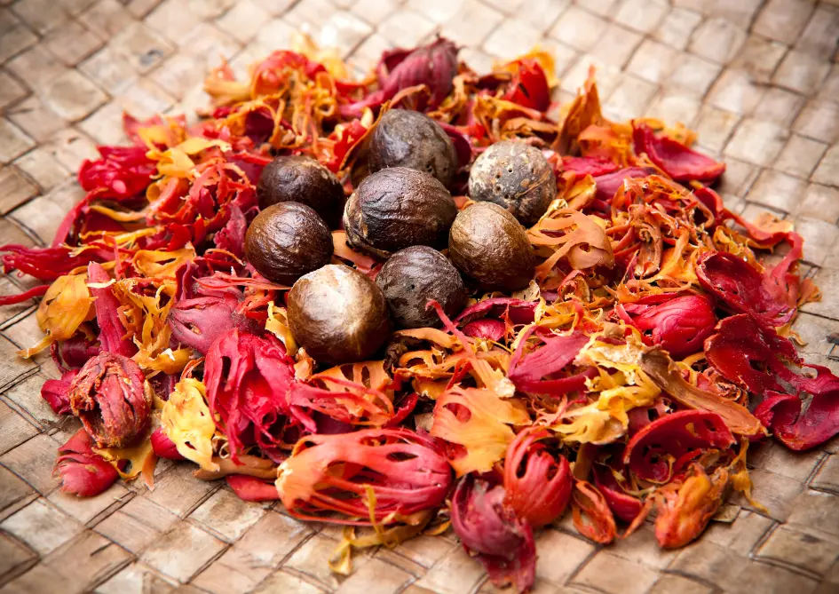

Ceylon Nutmeg & Mace
Whole Nutmeg Seeds & Mace Blades
A flavorful pair from the same fruit — our Ceylon Nutmeg and Mace deliver warm, spicy-sweet tones perfect for pastries, hot drinks, and therapeutic remedies. Carefully dried and packed to retain volatile oils and vibrant color.
Key Product Highlights
- Origin: Ratnapura, Sri Lanka (Estate-grown)
- Processing: Hand-separated, sun-dried, whole form
- Aroma: Nutty, warm, mildly sweet
- Applications: Baking, spiced beverages, beauty creams, pain balms

Product Specifications
| Specification | Details |
|---|---|
| Scientific Name | Myristica fragrans |
| Origin | Ratnapura, Sri Lanka |
| Form | Whole Nutmeg Seeds & Mace Blades |
| Essential Oil Content | 6–8% |
| Moisture | <10% |
| Color | Nutmeg: dark brown | Mace: bright orange-red |
| Packaging | 50g | 100g | 250g packs |
| Shelf Life | 2 years |
How to Use Ceylon Nutmeg & Mace
In Desserts
Grate nutmeg or crush mace into puddings, pies, and cookies for depth and warmth.
In Remedies
Nutmeg paste soothes muscle aches; mace tea helps with digestion and sleep.
Storage Tips
Store separately in airtight glass containers away from heat and light.
Warm up your senses with this aromatic spice duo from Ceylon.
Frequently Asked Questions
What is the difference between nutmeg and mace?
Nutmeg is the seed; mace is the red lacy covering of the seed. Both offer distinct warm flavors.
Can I use them together?
Yes. They pair beautifully in baked goods, warm drinks, and spice blends.
Are the spices whole or powdered?
They are whole for maximum shelf life. You can grate or crush them fresh as needed.
Are they certified organic?
Yes. Both spices are organically grown and certified under USDA & EU standards.